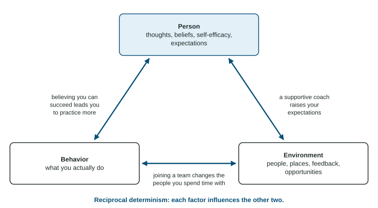

Social-Cognitive and Trait Theories of Personality
The social-cognitive view explains personality as reciprocal determinism among person factors, behavior and environment, with self-concept, self-esteem and self-efficacy as key person factors.
Part 1 · Hook
Why this matters
Part 2 · Before you start
What this builds on
Part 3 · Prerequisite check
Quick check before you start
1. A child watches an older sibling get praised for sharing and later shares too. Which concept explains this?
- Social learning through observation
- Classical conditioning
- Instinctive drift
- Habituation
Show the answer
Learning by watching others and the consequences they receive is social learning, the base of social-cognitive theory.
- Correct: Social learning through observation:
- Classical conditioning:
- Instinctive drift:
- Habituation:
2. Scores on two measures rise and fall together across many people. What does this show?
- A positive correlation
- A negative correlation
- That one causes the other
- Random assignment
Show the answer
When both rise together the correlation is positive; correlation alone does not show cause.
- Correct: A positive correlation:
- A negative correlation:
- That one causes the other:
- Random assignment:
Part 4 · See it
See it first

Part 5 · Step by step
How it works, step by step
- You believe you can succeed at a task (high self-efficacy)you try it and keep going when it gets hard
- You keep tryingyou improve and find settings, such as a club or team, that support you
- Success and support in that settingraise your self-efficacy further: person, behavior and environment shape each other
- Researchers rate many people on many trait words and run factor analysisthe ratings cluster into five broad traits, the Big Five, measured with personality inventories
Part 6 · Key ideas
Key ideas
- The social-cognitive view (Albert Bandura) explains personality through reciprocal determinism: person factors (beliefs, expectations), behavior and environment influence one another.
- Self-concept is who you think you are; self-esteem is how you value yourself overall; self-efficacy is your belief you can succeed at a specific task.
- Trait theories describe stable tendencies. Factor analysis of ratings gives the Big Five: openness, conscientiousness, extraversion, agreeableness, neuroticism.
- Traits are measured with personality inventories: many clear self-report items scored against norms. Traits are fairly stable in adults but still change across the lifespan.
Part 7 · Misconception
A common mistake
The wrong idea: Self-efficacy and self-esteem mean the same thing.
What actually happens: Self-esteem is your overall sense of worth. Self-efficacy is your belief about one task or area. You can value yourself highly and still doubt you can pass calculus.
Part 8 · Check yourself
Check yourself
Exam-style questions. Anything you miss goes into your review queue.
1. Before a free throw, Marcus thinks, "I have made this shot hundreds of times in practice. I can make it now." Which concept does his thought show most directly?
- Self-efficacy
- Self-esteem
- Self-concept
- External locus of control
Show the answer
Self-efficacy is a task-specific belief in your ability to succeed.
- Correct: Self-efficacy: Right: self-efficacy is his belief that he can succeed at this specific task.
- Self-esteem: Self-esteem is his overall sense of his own worth, not his belief about one shot.
- Self-concept: Self-concept is his whole set of beliefs about who he is, broader than one task.
- External locus of control: An external locus of control would credit luck or others; he credits his own practice.
2. Sam always arrives early, keeps a detailed planner and double-checks his work. On which Big Five trait would he most likely score high?
- Openness to experience
- Conscientiousness
- Agreeableness
- Extraversion
Show the answer
Conscientiousness describes organized, careful and dependable behavior.
- Openness to experience: Openness is curiosity and interest in new ideas and experiences, not organization.
- Correct: Conscientiousness: Right: conscientiousness is being organized, careful, dependable and goal-directed.
- Agreeableness: Agreeableness is being warm, cooperative and trusting toward others.
- Extraversion: Extraversion is being sociable, energetic and drawn to social settings.
Figure
Reciprocal determinism
3. Using the figure, which example shows the environment influencing a person factor?
- A student practices the piano for an hour each day after school
- A teacher's praise leads a student to expect she can learn piano
- A student's belief in her ability leads her to practice more
- A student who practices more is invited to join a band
Show the answer
Environment to person: something outside you, such as feedback, changes your beliefs or expectations.
- A student practices the piano for an hour each day after school: Practicing is a behavior; the example needs something in the setting changing a belief.
- Correct: A teacher's praise leads a student to expect she can learn piano: Right: the teacher (environment) changes the student's expectation (person).
- A student's belief in her ability leads her to practice more: That is person influencing behavior, a different arrow.
- A student who practices more is invited to join a band: That is behavior changing the environment.
4. According to the figure, why would a trait-only account of a shy student be incomplete?
- Because traits are measured mainly with ambiguous projective tests
- Because traits are unconscious wishes held back by defense mechanisms
- Because her shyness shapes the settings she picks, which shape her in turn
- Because shyness is caused by the environment rather than the person
Show the answer
Reciprocal determinism adds the back-and-forth that a trait description leaves out.
- Because traits are measured mainly with ambiguous projective tests: Traits are usually measured with personality inventories, not projective tests, and the figure is about interaction.
- Because traits are unconscious wishes held back by defense mechanisms: That is the psychodynamic view, not a description of traits.
- Correct: Because her shyness shapes the settings she picks, which shape her in turn: Right: the arrows run in all directions, so a fixed trait label leaves out how person, behavior and setting change one another.
- Because shyness is caused by the environment rather than the person: The figure shows two-way influence, not the environment acting on its own.
5. A teen with low self-efficacy in math avoids hard problems, so she gets less practice, and her test scores stay low. In the figure, which two factors does this cycle connect most directly?
- Person and behavior
- Environment and environment
- Behavior and the unconscious
- Environment and traits
Show the answer
Low self-efficacy shapes behavior, and the behavior's results confirm the belief.
- Correct: Person and behavior: Right: her belief (person) leads to avoiding problems (behavior), and the results feed back into her belief.
- Environment and environment: An influence runs between different factors, not within one.
- Behavior and the unconscious: The unconscious is not part of this model.
- Environment and traits: Neither her setting nor a trait label drives this cycle; her belief and her actions do.
Data
Conscientiousness and grades
Researchers gave 10 high school seniors a personality inventory and recorded each student's grade point average (GPA). The scatterplot shows each student's conscientiousness score (0 to 50) and GPA.
6. A school leader concludes from these data that raising students' conscientiousness would raise their GPAs. What is the main problem with this conclusion?
- The sample of 10 students is too small to show any pattern at all
- The scatterplot shows a negative relationship
- GPA is a grade, so it is not a true number that can be correlated
- It is correlational; a third variable such as sleep could explain both
Show the answer
A correlational study cannot show that one variable causes the other; name a possible third variable.
- The sample of 10 students is too small to show any pattern at all: Ten students is a small sample, which calls for caution, but the pattern is clear. The main problem is that the study is correlational.
- The scatterplot shows a negative relationship: The relationship is positive.
- GPA is a grade, so it is not a true number that can be correlated: GPA is a number; that is not the problem.
- Correct: It is correlational; a third variable such as sleep could explain both: Right: correlation does not show causation; sleep or home support could raise both scores.
7. On the inventory's published norms, conscientiousness scores follow a normal curve with a mean of 30 and a standard deviation of 6. By the 68-95-99.7 rule, about what percent of people score below 36?
Type a number (%). No calculator needed: work it out by hand, as on the exam.
Show the answer
is one standard deviation above the mean. Below it lie of scores.
- Answer: 84 %
Part 9 · Summary
Summary
Part 10 · Up next
What comes next
Part 11 · Connections